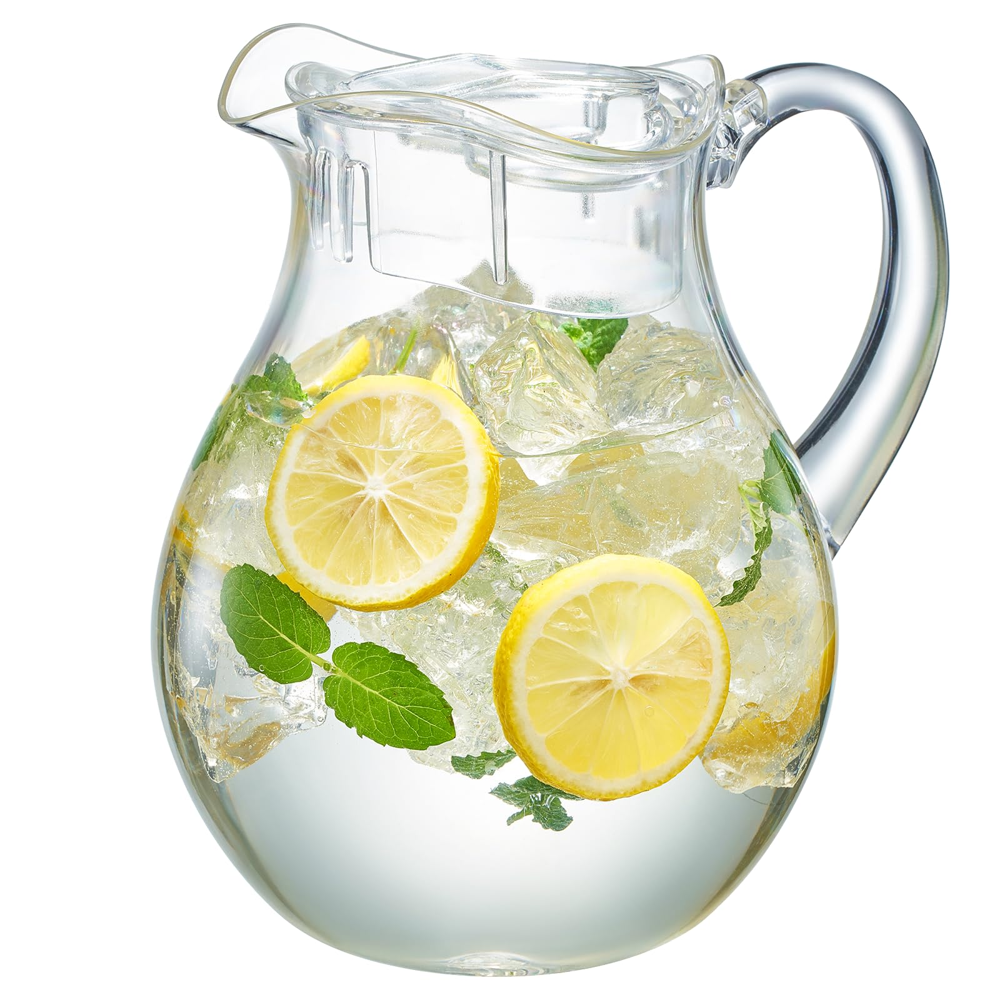
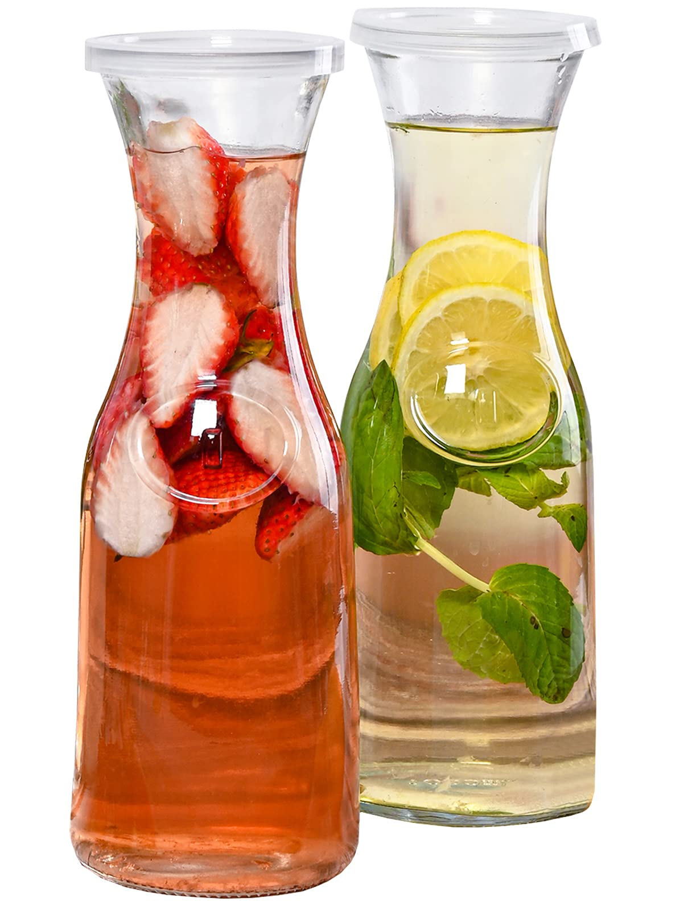
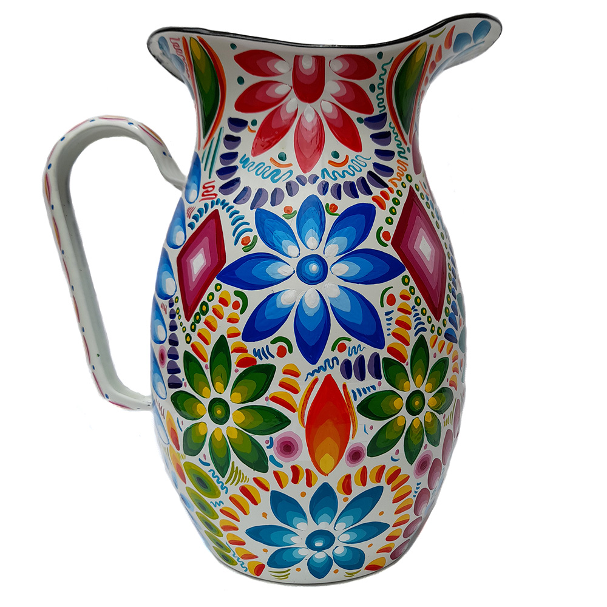
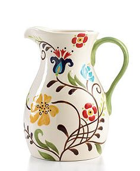

Las jarras simbolizan la ambigüedad de todas las cosas inanimadas , representan la atemporalidad en oposición a nuestra propia mortalidad; pero, como objetos frágiles, también pueden indicar fragilidad y pérdida.



